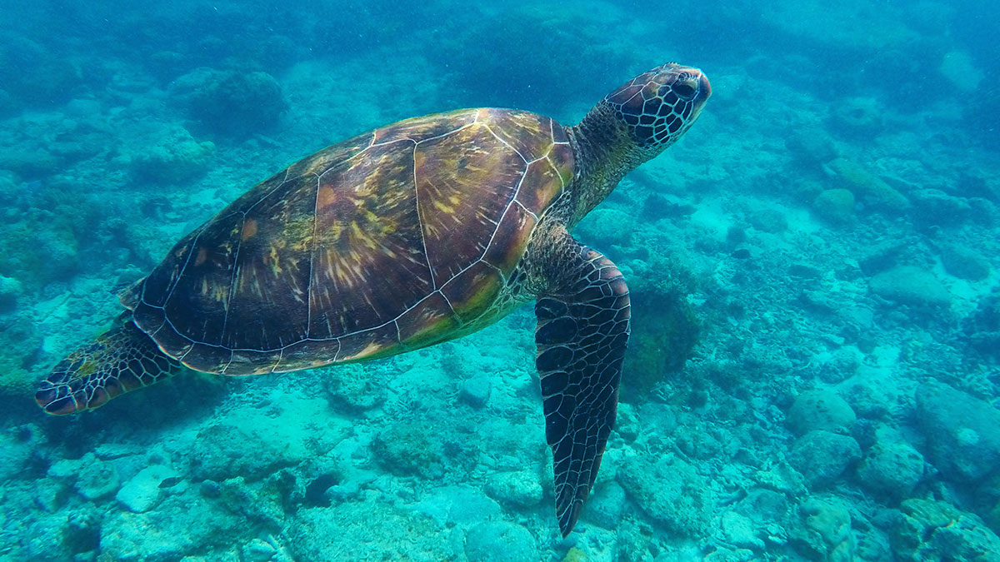

Green Sea Turtle
The green sea turtle (Chelonia mydas), also known as the green turtle, black (sea) turtle or Pacific green turtle, is a species of large sea turtle of the family Cheloniidae. Its range extends throughout tropical and subtropical seas around the world, with two distinct populations in the Atlantic and Pacific Oceans, but it is also found in the Indian Ocean.
Leatherback Sea Turtle
The leatherback sea turtle (Dermochelys coriacea), sometimes called the lute turtle or leathery turtle or simply the luth, is the largest of all living turtles and the heaviest non-crocodilian reptile. It can easily be differentiated from other modern sea turtles by its lack of a bony shell; instead, its carapace is covered by oily flesh and flexible, leather-like skin, for which it is named.

Olive Ridley Sea Turtle
The olive ridley sea turtle (Lepidochelys olivacea), also known commonly as the Pacific ridley sea turtle, is a species of turtle in the family Cheloniidae. The species is the second-smallest and most abundant of all sea turtles found in the world.
Hawksbill Sea Turtle
The hawksbill turtle (Eretmochelys imbricata) is a critically endangered species that can be found in Sri Lanka. Hawksbill turtles maintain coral reef health by feeding on sponges and controlling algae growth with their unique shells and pointed beaks.
Loggerhead Sea Turtle
Loggerhead turtles (Caretta caretta) are another species found in Sri Lanka. They have a distinctive large head and powerful jaws, enabling them to consume a variety of prey, including crustaceans and mollusks. Loggerhead turtles undertake long migratory journeys and are known for their nesting behavior on Sri Lankan beaches.
| Name | Conservation Status | Locations |
|---|---|---|
| Green Sea Turtle | Endangered | Kosgoda and Rekawa |
| Leatherback Sea Turtle | Vulnerable | Kosgoda, Mirissa and Rekawa |
| Olive Ridley Sea Turtle | Vulnerable | Trincomalee |
| Hawksbill Sea Turtle | Critically Endangered | Kataduwa, Bentota, Udappuwa, Kosgoda, Karaduwa, Talaimannar, Jaffna, Galkissa, Talawila, Palatupana and Amadhauwa. |
| Loggerhead Sea Turtle | Vulnerable | Kosgoda and Rekawa |
| Every species of turtles found in Sri Lanka is classified as being in the threatened phase of the IUCN ranking system. | ||